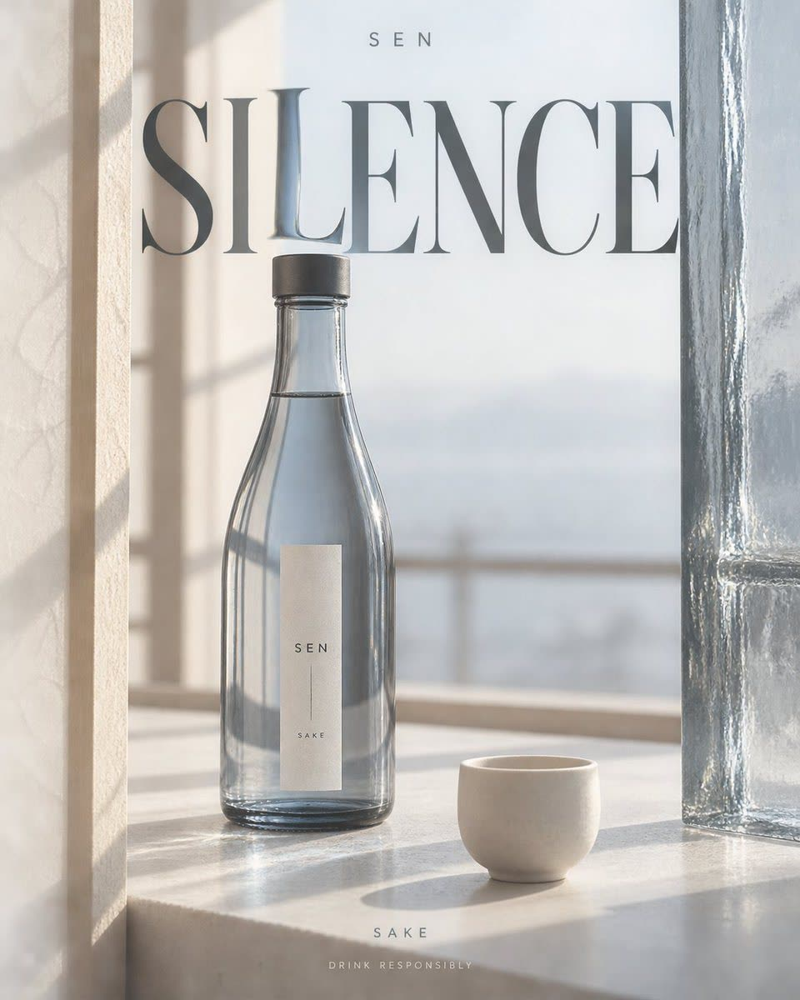

GPT-Image-2 Alcohol Poster Prompt
PRP-009Prop stylingGPT Image 2by 蛋黄堡October 16

A detailed prompt for generating realistic commercial alcohol posters with specific material interactions and lighting effects using GPT-Image-2.
Prompt
Create a 4:5 vertical alcohol promotional poster, outputting only one independent finished piece at a time. Fixed visual language: Realistic commercial still life photography, warm ivory negative space, huge high-contrast serif titles, restrained editorial typography. Use the wine bottle and transparent medium to refract text, combined with bright channels formed by materials on both sides; no neon, glowing outlines, generic e-commerce cards, or golden luxury decorations. Arrange [product] according to [scene and lens]. Let [materials on both sides] enter the frame in close-up, partially cropped, forming asymmetric vertical negative space. The opening can slowly expand and contract with the lens, do not make it a mirrored doorframe. The bottle occupies about half to two-thirds of the screen height, fully recognizable in the negative space, with slight occlusion from one side's material; the upper part should still have breathing room. The materials on both sides must come from the storage, packaging, or drinking context of this liquor, without adding irrelevant caves, flower fields, or uniformly replicated photographic backgrounds. Place the large title [title] across layers in the upper middle section, letting a small segment of its strokes pass behind the wine bottle or transparent medium, undergoing local magnification, displacement, or color filtering in the [optical event]. Parts of the text not passing through the medium remain normally clear; deformation is limited to the light-transmitting area, cannot twist the entire title into waves. Use [primary color] as the only strong color, assisted by warm ivory and charcoal black; light transmission through the liquid, glass thickness, contact shadows, condensation, and projections must be credible, do not draw optical effects as lasers. [Brand] is placed at the top in a small, sparse sans-serif font; [Category] and "Drink Responsibly" are at the bottom as two lines of small text. The bottle label uses only the brand and category, leaving clean information density. Only the above text is allowed in the entire image, do not automatically add slogans, vintages, alcohol content, awards, origins, prices, or unprovided product claims. No people in the scene, do not depict excessive drinking. Preserve delicate natural material textures and precise glass highlights, avoid heavy CGI, floating products, extra bottles, random letters, glare stacking, collages, and watermarks. Scene, lens, bottle shape, and optical events change with variables, but the visual language of warm ivory negative space, serif main titles, and local refraction remains consistent.
Tags: close-up, neon, product, fashion, 9:16 vertical